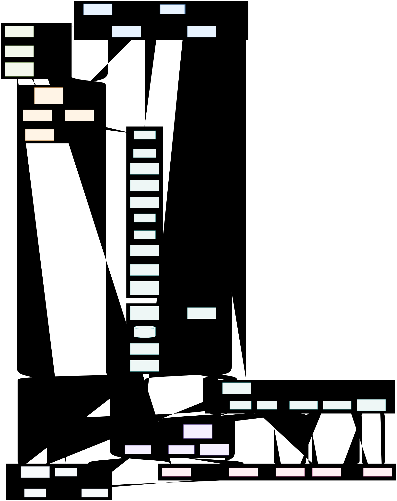

Pipeline
A human-led, AI-assisted loop: investigators design and own the study; AI tools execute and review under their direction; experts approve every step.
Reviewed loop. Investigators draft items; GPT-5.5 returns structured flags (bias, clarity, validity); investigators revise; Claude / Cowork then builds the approved instrument in REDCap. Nothing goes live without investigator approval.
Governance. The investigators own study design and orchestration. AI tools assist, execute, and review under their direction; they augment and are verified — they do not replace expert judgment, and are not co-authors.
Full research architecture
End-to-end view from governance and the evidence gap, through investigator-led instrument design (with AI-assisted drafting and GPT-5.5 review), REDCap capture, scoring, analysis, the planned paper series, and the open-science layer.

Source (Mermaid): docs/architecture.mmd. Investigators own design & orchestration; Claude / Cowork builds and operates the REDCap instrument; GPT-5.5 reviews items; human-in-the-loop oversees every stage.